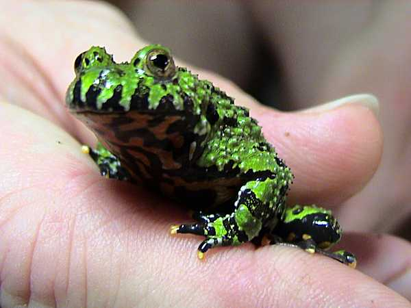
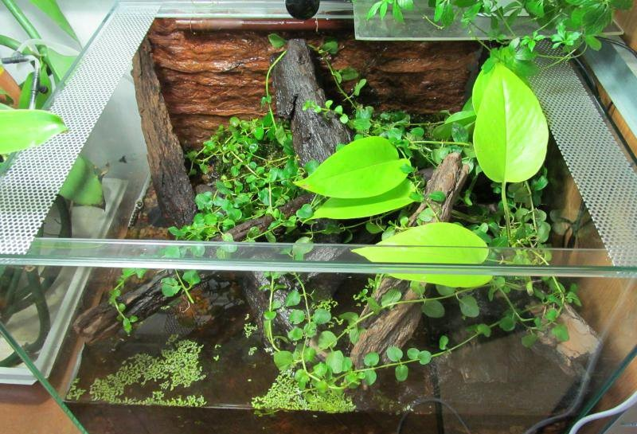

Pochodzenie
Azja Wschodnia (Chiny, Korea, południowa Rosja)
Długość
4–6 cm
Długość życia
10–15 lat w hodowli
Tryb życia
Półwodny, aktywny w dzień
Cechy szczególne
Jaskrawo pomarańczowy brzuch – sygnał ostrzegawczy (toksyczność)
Poradnik hodowli i informacje o gatunku

Azja Wschodnia (Chiny, Korea, południowa Rosja)
4–6 cm
10–15 lat w hodowli
Półwodny, aktywny w dzień
Jaskrawo pomarańczowy brzuch – sygnał ostrzegawczy (toksyczność)

18–24°C (nie wymaga ogrzewania w większości mieszkań)
Umiarkowana do wysokiej (część wodna zapewnia wilgoć)
Czysta, filtrowana lub regularnie wymieniana
Naturalny cykl dnia i nocy, UVB nie jest konieczne

Kumaki wydzielają toksyny przez skórę. W razie zagrożenia pokazują jaskrawy brzuch (tzw. odruch unken).
Nie należy brać na ręce – skóra jest delikatna i wydziela toksyny.